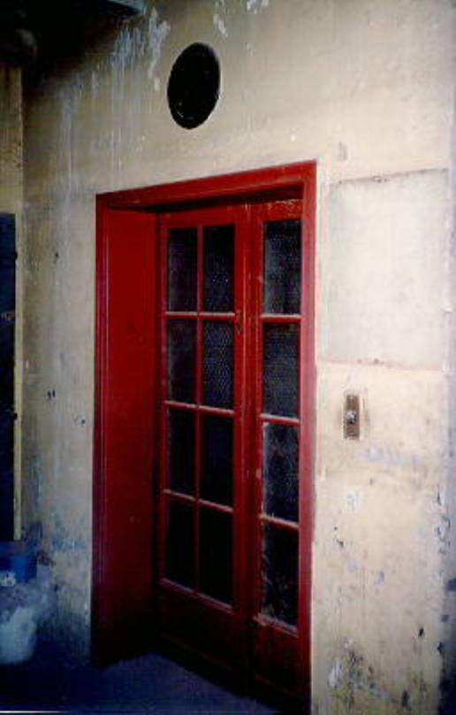
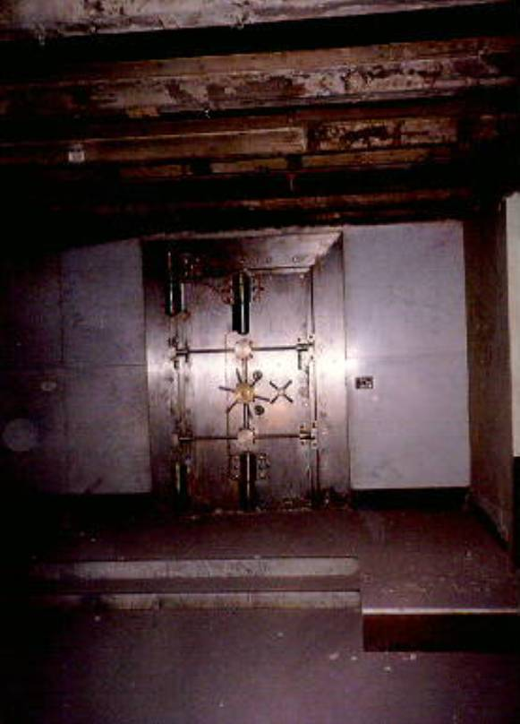
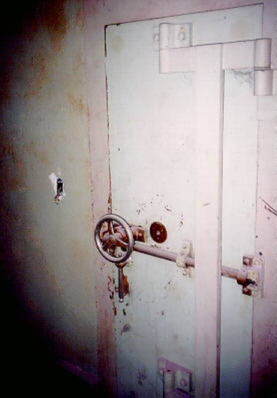
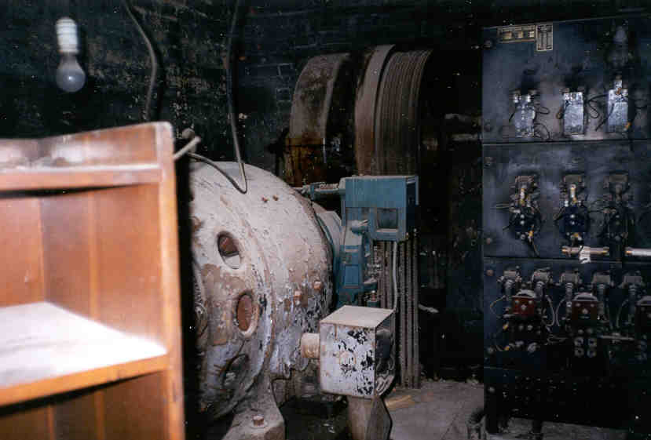

| Our first stop on this trip was the
basement. In my opinion, the basement had the most to see as far as
content and interest. The picture to the right is what appears to be the
original elevator. Above it is the floor indicator which used a dial as
opposed to the conventional light or digital readings that history tells
us weren't available in the 30s. HERE
is a close up of the dial in poor quality thanks to OSU and their crappy
scanner. It appeared that people had thrown a few things down the elevator shaft over the years. I think the elevator was on the first floor although the indicator indicates its in the middle somewhere. We pushed the button but it surprisingly took forever. We decided to take the stairs. |  |
|  | This was my favorite find in the entire
place. A giant vault in the basement. There were other smaller vaults, but
none as large and impressive as this on. I took one really bad close-up of
the door that can be seen HERE.
Why I took a picture of only half I'll never know. We attempted to open the door, but it was locked. The vault is separated from the outside wall by a narrow walkway to keep people from breaking in. Since the vault is in the basement someone would have to be very industrious to get in. I suppose it would have been worth it given the size of the thing. |
|  |  |
| These are the other two basement Vaults. Certainly not as secure as the other, however these were protected by wallpaper so ugly it would injure anyone who looked in to it. Beware! |
{kind=link}
{kind=link}
{kind=link}
{kind=link}
{kind=link}
{kind=link}